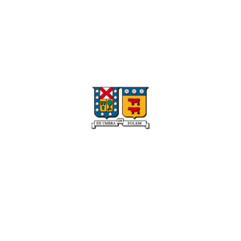

Soy un joven programador, con interés en trabajar en con bases de datos o ciberseguridad, pero puedo adaptarme al área donde sea necesario.
He trabajado previamente en compañías como Samsung, Nintendo y Google. En Samsung y Google he trabajado en ciberseguridad, mientras que en Nintendo he ayudado a desarrollar el software de sus consolas recientes.
Me he titulado en la carrera de Ingeniería en Informática en la Universidad Técnica Federico Santa María de Chile, egresado el año 2027.
Tengo experiencia trabajando con los lenguajes de programación: Python, C, C++, Scheme, Prolog, JavaScript, Java y HTML. También domino los idiomas español e inglés, tanto escrito como hablado.
